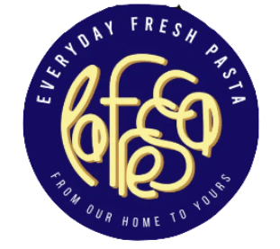
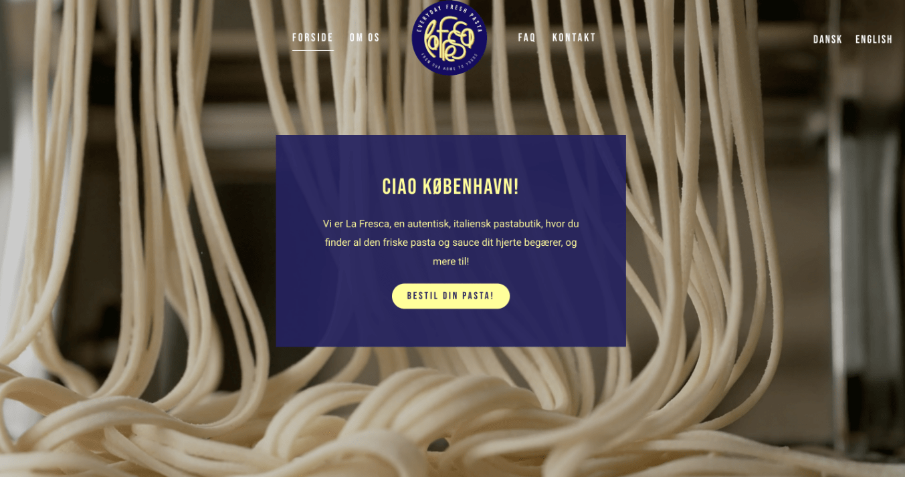
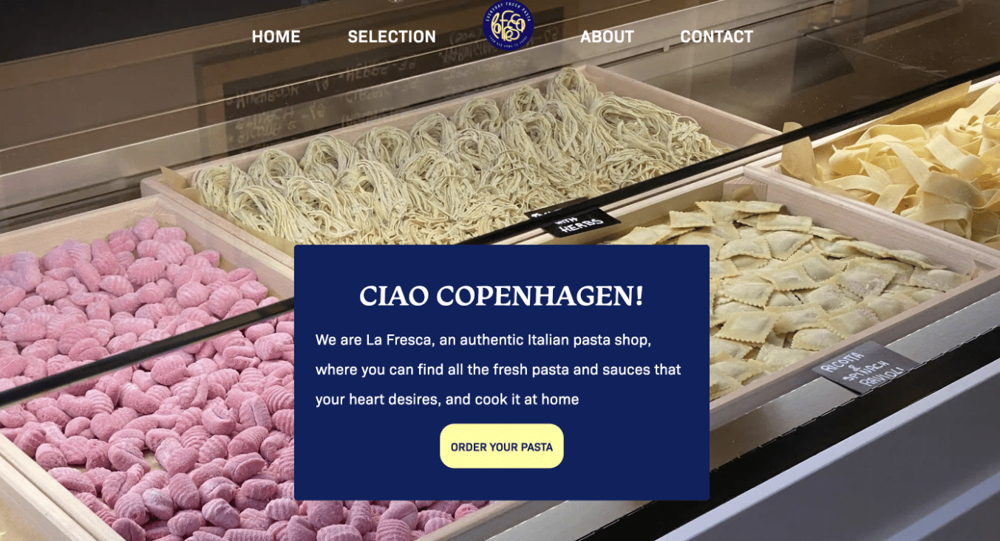
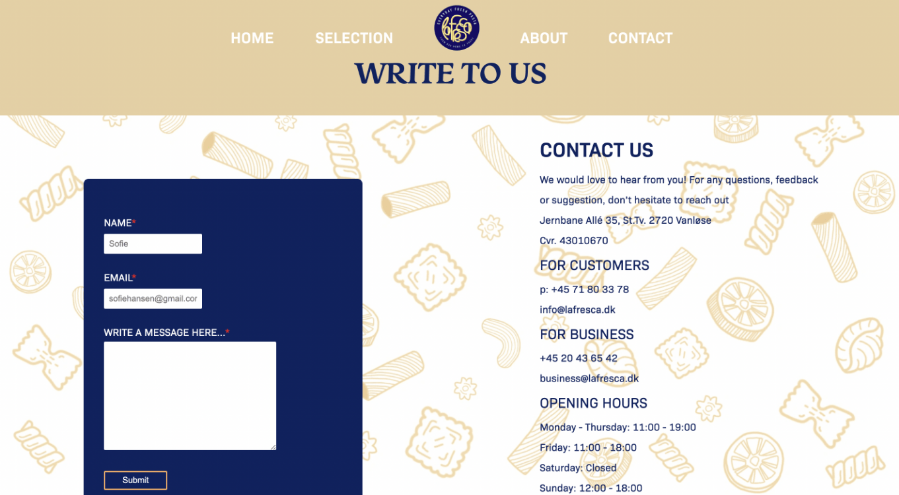

Tema 5. Grundlæggende indhold
La Fresca - redesign projekt
Deres design

Vores redesign

- Simpelt
- Spændende
- Moderne

- Interview metoder
- Github
- Kamera vinkler
- Nytænkning
I vores seneste projekt i tema 5.
Skulle vi lave et redesign af en valgfri hjemmeside,
ud over det skulle vi også lave en video til deres
Website og en til deres instagram.
Vi valgte at arbejde sammen med en pasta shoppen “La Fresca”
Process:
Vi startede med at oprette et trelloboard,
her planlagde vi vores arbejdsopgaver,
det hjalp os med at holde styr på hele projektet,
hver morgen havde vi også et SCRUM møde for at samle op
på hvor langt vi var nået.
I dette projekt benyttede vi os af interview metoder
vi lærte i tema 3.
Derudover lavede vi BERT test for at finde
ud af om virksomhedens nuværende website
og koncept var brugervenligt og tydeligt.
Derudover brugte vi moodboards, wireframes
og Git hub til at gøre kodningsdelen nemmere,
I og med vi arbejde i grupper hjalp Git Hub os
Med at holde styr på alles kode.